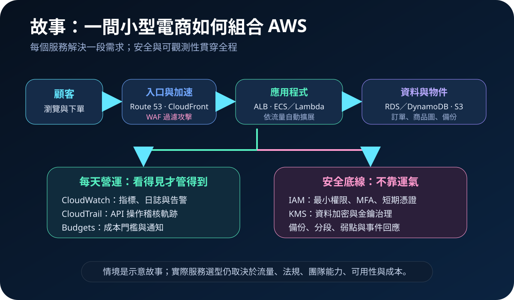
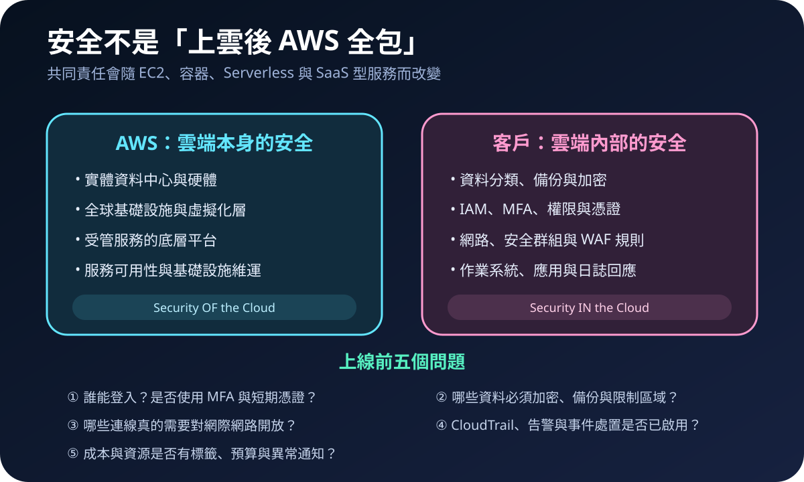

AWS 基礎介紹 01 · 2026-08-22
AWS 有哪些服務？從需求地圖理解雲端服務家族
作者：Dr. William｜雲端與資訊安全實務工作者
AWS 不只是租一台 EC2。官方產品頁在 2026 年 8 月 22 日查閱時列出 232 項產品；數量會隨新服務與產品生命週期持續變動。入門的重點不是背完整清單，而是先辨認需求：需要運算、檔案、資料庫、網路、安全、監控、資料分析，還是 AI？
閱讀方法：下列十個家族是便於學習的需求地圖，不是 AWS 官方唯一分類。實際選型須再確認區域可用性、價格、法規、資料位置、團隊能力與服務限制。
十個需求家族，先建立全貌
- 運算：EC2 提供虛擬伺服器；Lambda 依事件執行程式；ECS、EKS 管理容器工作負載。
- 儲存：S3 放置物件與備份；EBS 提供區塊儲存；EFS 提供共享檔案系統。
- 資料庫：RDS、Aurora 適合關聯式資料；DynamoDB 適合低延遲 NoSQL；ElastiCache 處理快取。
- 網路：VPC 建立網路邊界；ELB 分流；Route 53 管理 DNS；CloudFront 加速內容。
- 身分與資安：IAM 管理權限；KMS 管理金鑰；WAF 過濾 Web 攻擊；GuardDuty、Security Hub 協助偵測與彙整風險。
- 管理與治理：CloudWatch 觀測指標與日誌；CloudTrail 保存 API 活動；Config 檢查組態；Organizations、Control Tower 管理多帳號。
- 資料與 AI：Athena、Glue、Redshift 處理分析；Bedrock 與 SageMaker AI 支援生成式 AI 與機器學習工作負載。
- 應用整合與開發：API Gateway、SQS、SNS、EventBridge、Step Functions 串接 API、訊息與工作流程。
- 遷移與混合雲：DMS、DataSync、Storage Gateway、Outposts 支援資料與工作負載遷移或混合部署。
- 終端、商務與 IoT：WorkSpaces、Connect、SES、IoT Core 分別支援虛擬桌面、客服、郵件與裝置連線。
情境故事：小型電商不是先選 EC2
假設一家小型電商準備推出訂單網站。顧客先經 Route 53 找到網域，再由 CloudFront 快取靜態內容，WAF 過濾常見 Web 攻擊。動態請求可送入 ALB 後的 ECS 應用，或由 API Gateway 呼叫 Lambda。訂單存入 RDS 或 DynamoDB，商品圖片放 S3；CloudWatch 監看錯誤與延遲，CloudTrail 保留管理操作軌跡。

這個故事不是標準答案。流量很小時，Serverless 可能減少維運；既有團隊熟悉虛擬機時，EC2 可能比較容易落地；需要 Kubernetes 生態時，才評估 EKS。架構越新潮不代表越適合，能被團隊安全營運才是有效選型。
資安重點：AWS 與客戶各自負責什麼
AWS 共同責任模型把責任分為雲端「本身」與雲端「內部」。AWS 負責資料中心、硬體、全球基礎設施與底層平台；客戶仍須負責資料、身分、應用、網路組態、加密、日誌及作業系統等項目。採用 EC2、容器或受管服務時，分工邊界不同，不能把「使用 AWS」當成自動合規或自動安全。

第一天就要做的安全清單
- 根使用者設定 MFA，日常操作改用 IAM Identity Center 或受控角色，不使用根帳號與長期金鑰。
- 權限採最小權限，定期檢查未使用的使用者、角色、存取金鑰與跨帳號信任。
- S3、資料庫與備份預設不公開；對外服務只開必要連線，安全群組避免無限制暴露管理埠。
- 依資料敏感度啟用傳輸與靜態加密，界定 KMS 金鑰管理、輪替與復原責任。
- 啟用 CloudTrail、必要的 CloudWatch 告警與組態檢查，讓變更、異常與事件可追查。
- 設定標籤、AWS Budgets 與成本異常通知，防止閒置資源或金鑰外洩演變成帳單驚喜包。
- 建立備份、還原測試、事件回應與帳號隔離流程；備份存在不等於能復原。
接下來怎麼學
後續文章將逐一介紹代表服務，固定回答四個問題：它解決什麼、何時使用、流程如何運作、哪些安全設定最容易出錯。下一篇將從 EC2 開始，說明虛擬機、映像、網路、安全群組與修補責任。
來源
- AWS｜AWS 雲端服務與產品目錄（查閱：2026-08-22）
- AWS｜共同責任模型（查閱：2026-08-22）
- AWS IAM User Guide｜Security best practices in IAM（查閱：2026-08-22）
- AWS Well-Architected Framework｜Security Pillar（查閱：2026-08-22）
內容說明
本文依 AWS 官方產品目錄、安全文件與共同責任模型整理，提供基礎學習與架構討論使用；不取代 AWS 最新文件、個別組織的法規判定、成本估算或資安風險評估。